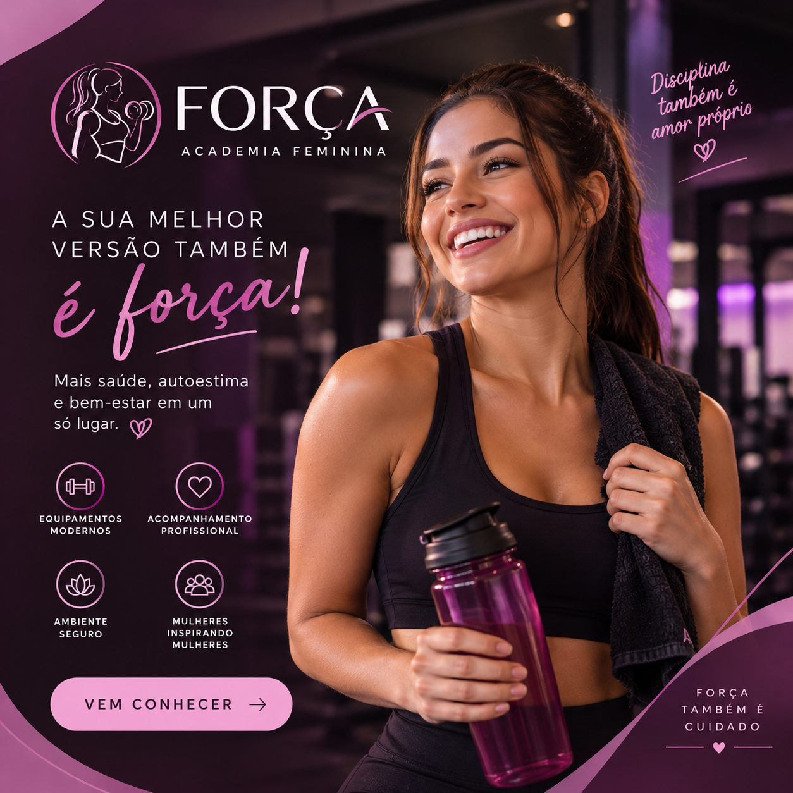

PROGRAMAÇÃO
Meu primeiro código
Como foi transformar uma ideia em instruções para o computador.
Escolha as cores, escreva sobre o que gosta e transforme este template no seu próprio projeto.
Começar a explorarPUBLICAÇÕES
✏️ Troque categorias, títulos e textos pelos conteúdos do seu grupo.

Como foi transformar uma ideia em instruções para o computador.
Descobrindo como os elementos se juntam para formar um site.
Como cores, fontes e espaços ajudam a criar uma identidade.
Criando nossas primeiras interações usando JavaScript.
Personalizando o projeto e experimentando novas ideias.
Este card é seu. Escolha o assunto e escreva uma descrição.